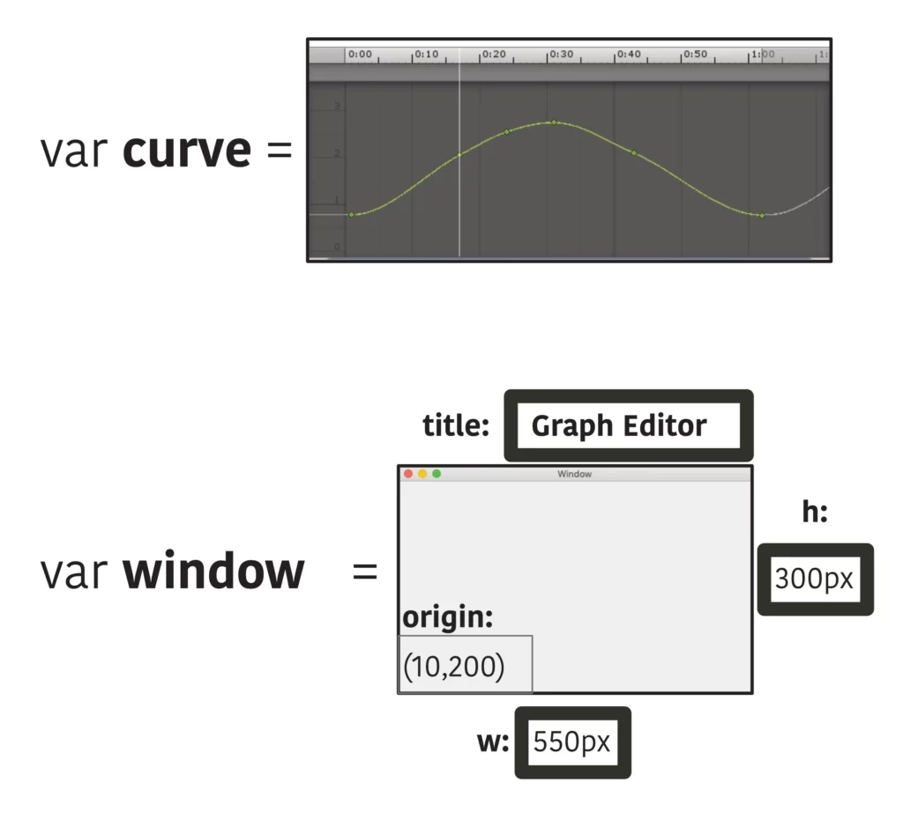

NOCTIVAGOUS

Introduction
Though AI is currently introducing a new paradigm to the world, there is still much about computers that needs to be upgraded. First, computer code files should be made out of structured data. Code files are still made of plain text and in practice this is interpreted and utilized in modern software development as if it provides structured data even though it does not. All activities related to programming software are behaving this way, which is the modernization of code without going about it in a deliberate way. To achieve enhancements to code and improve interactivity, the IDEs project non-existent structure onto the code file for the benefit of the user, including keyword highlighting, code completion. Increasingly, they treat a .TXT file of code as a conventional application document. Many benefits will emerge when code is finally converted to a formal document format, including a leap in parsability by the compilers and the IDEs themselves, as they will be parsing XML instead of plain text, which carries too much ambiguity for live parsing. When code is finally translated into a document format, which will support interactivity, the quality of interaction with code will improve as well. Many features will appear, such as the ability to survey a project of code in the format of a map or schematics, zoomable just like CAD because the code files have formal structure in them.
What is important to note is that for the graphic designer, though not necessarily the typical software engineer, once today's computer code is shown to be completely tied to the basic .TXT file format, all discussions about feature differences existing between the various programming languages are obviously taking place inside a tiny frame of view, which is what can be typed into the .TXT file format, a sequence of ASCII or Unicode characters. Consider that in some programming languages, functions start and end with the keywords "define" and "end" while most others use beginning and ending curly braces, all of which is using typographic characters to establish boundaries. But in a programming language not constrained by .TXT, there will be no beginning and ending keywords (or characters) needed to make the boundaries. Instead, the contents of a function will be enclosed in a graphical bordered box, as the file of text will no longer be .TXT but rendered from a document (e.g. rendered from XML). At that point, the focus of the user interface will be to allow the programmer to change, add, or remove the graphical boxes (that enclose the loops, functions, and other bodies of code), and it will involve making use of interactive keyboard shortcuts, not typing out '{' or '}'.
This why today the features of any mainstream programming language truly cannot extend outside of what the .TXT file format provides. It is a debate about what characters should begin and end the bounds of a funcction (curly braces or keywords), but that kind of debate does not exist when it is a graphical box enclosing the contents of a function. The design decisions that differentiate one programming language from another exist within this limited and ubiquitous file format, plain text. Since it is so restrictive, having no structured data inside it, it is actually the case that the feature differences between programming languages are rather miniscule compared to the open vista that a document format will provide. The mainstream programming languages all exist within what characters .TXT accepts, but a document format will accept much more than characters. A programming language can someday manifest as anything that involves a more graphical and interactive state. It can include semiotical diagrams and a line of code can branch out into multiple lines.
It's also important to note that many software applications today could be written in a live programming environment, but for some odd reason this is only treated as relevant for a web app. For instance, a calendar software application is very lightweight for today's computers, and there is no reason that an application like that would need to be written in code that has to be recompiled for every change. The mindset of the software engineering community did not catch up with the major increase in computing processing power, and software applications today are written in a style that is suited for slower machines of the 1990s. This is especially evident when using web apps: today they can be edited and then reloaded immediately, whereas the same app in an IDE has to be recompiled. Of course, in the 1970s the original goal of Smalltalk-80 was to allow the programmer to edit software in real time. For many types of apps, their functionality could be assembled and edited by the software engineer live because they only have certain functions that are processor intensive. This also holds for the lighter aspects of large software applications. Even a professional app could have many or all parts assembled in real time. Instead, any app has to be rebuilt (recompiled) unless it is a web app made out of JavaScript, because Just-In-Time code editing and recompilation has not been made a priority for mainstream software development.
The widespread affinity for the traditional UNIX command line interface is misplaced, as when long sequences of logs and operations occur they fly by and are completely unreadable, which often makes them pointless to have shown up. The command line should at least be upgraded such that graphical progress bars appear inside the terminal window when extended operations are taking place, and all terminals should be graphics capable; they should be able to show thumbnails of images inside the terminal window after a command is executed, show them in a grid if in a directory, they should be able to play videos, even 5 at a time simultaneously. Many aspects of the UNIX era should be upgraded. Addressing the problem a stream of unreadable logs that quickly passes by: all logs should declare their category so they are grouped into boxes as they show up in the terminal. Moreover, these boxes should appear in multiple column format. The command line can be made more user friendly. These are just a few topics that need to be addressed.
-
Future Code Requires The Integration of Graphic Design into Software Development Environments
-
Opportunities to Upgrade Computer Code’s Form inside The Editor

Programming languages designed for application software development are more capable than a few decades ago, but not by much. Any progress has occurred inside the plain text file format. They haven't been upgraded in a comprehensive way that utilizes the new graphical capabilities of computers. It's all terminal type. To give an illustrative example that adds to the two shown above, an object variable should be assignable to an interactive vector field in the code editor. A UI control embedded in a line of code can do much more than alphanumeric type in complex situations, across a wide range of subjects. Instructions can someday be expressed semiotically, even, if graphics are embraced as elements inside a line of code. So far, there has never been a semiotical programming language system.
When graphics are included, the resulting depth of command over the operations of a computer will not be matched by any current sequence of plain text. Small experiments have shown that this is much superior, it's just that there are doubts expressed by some over whether it can match the speed of editing plain text— in other words the user interface. We address this here. What seems like an insurmountable obstacle, making graphical code's interface comparable to plain text in editing power, is actually a matter of taking a different approach. In every single case, previous attempts abandoned too much of what was in active use in the practice of programming inside plain text and tried to come up with something foreign, which means that the code conventions did not match what people were trying to do when they program. Instead, Noctivagous' plan is to gradually add augmentations to plain text as it exists today. A little bit later, code can break free from plain text and sit inside its own document file format. (Already there are movements in this direction with Jupyter Notebook, just not for the code itself, only the output.) So, initially it is that UI and widgets additions are allowed inside a line of plain text code, just like right now when a color can be assigned to a color picker control. After a color picker has been used in code for a while, it is felt as missing when not available. In this way, graphical widgets and controls won't only be a matter of convenience. When they are placed into code, they will be able to summarize large sequences of computer instructions such that no one will want to go backwards to just typing out regular terminal type (monospaced type).
The importance of this effort can be explained in the following. Producing a competing web browser engine that is as complete as Chromium or WebKit can't be done in a short period of time, and when this isn't possible it represents a dead end for software development. Those two software projects will never be unseated because there is little incentive to surpass them, as what is written from scratch with current programming languages will basically end up being the same in outcome. Even with AI programming assistants, this does not change because those engines have reached the ceiling of what plain text code will produce without an upgrade.
It is possible to escape this dead end and it is by breaking from the fusion of computer code to the typewriter. For a major upgrade to happen, alterations like the above image have to occur, because code has to look more like the software it produces, not just raw, monospaced type. It has to be able to express complex operations in terms of signs and symbol someday. Computer science mindsets that refuse collaboration with graphic design won't suffice, then, as software development has stayed inside terminal type all this time. When code is upgraded, the initial subjects of concern turn out to be different; they will have to incorporate graphic design and media design principles. The areas of expertise involved are often outside of what is found in mainstream software engineering discussions.As explained in the articles on this page, the obstacle to a deeper level of progress in software development is the confining, primitive offerings of the file format plain text, that it has been stretched far beyond its bare capabilities to serve increasingly large and complex needs, blowing past the environment of 1980s and 1990s computing when it formed the programming languages still in active use today, like C++, Python, and Java. This primitive code medium is largely accidental, it doesn't lend itself to a surveyable view, a zoomable map like CAD, and it of course by definition cannot accommodate rich text inside the code without odd adaptations. Since it has so many limitations for today's world, it has to be transcended.
A collection like an array or dictionary is still not editable by way of a data table GUI control inside a line of code. Instead, the programmer clumsily navigates through commas with the arrow keys. In addition to this, future computer code needs to be editable in multiple newspaper-like columns to make efficient use of screen space. Plain text is too raw of a file format for programming software in the 21st century, and it doesn't allow inclusion of modern GUI controls for formulating groups of instructions.
Noctivagous starts with the plain text code as programmers work with it today and then adds GUI to that as the first step, continuing the trend of exists today where the value of a color variable is controllable by an inline color picker. It is believed that later the code file should be transformed into a document file format for truly rich code editing. Each article below explains these issues.
-
The Upgrade of User Interface
- The Key-Click UI (Demo)
- It’s Difficult for Users to Organize Files on Computers When Provided a Such a Basic File Tree Hierarchy.
- Connect Some Windows with Node Wires If You Like. Software Applications Now Operate In Isolation From One Another.
Noctivagous will let you wire up application windows as if they are nodes in node-based programming, because the input and outputs will be on the back of the window and it can flip around. Different applications will interact with each other, providing their complex features to each other, publishing and receiving data as the user decides.
- Moving Past The iOS And Android Touchscreen User Interface
AI
- AI Facilitation of Work Processes Vs. AI Takeover of Human Jobs
Discussing What Should Be The Aim for AI Technology, Using The Example of a Vegetable-Cutting Kitchen Appliance That Is Driven by AI
- AI Facilitation of Work Processes Vs. AI Takeover of Human Jobs
Graphics And File Formats